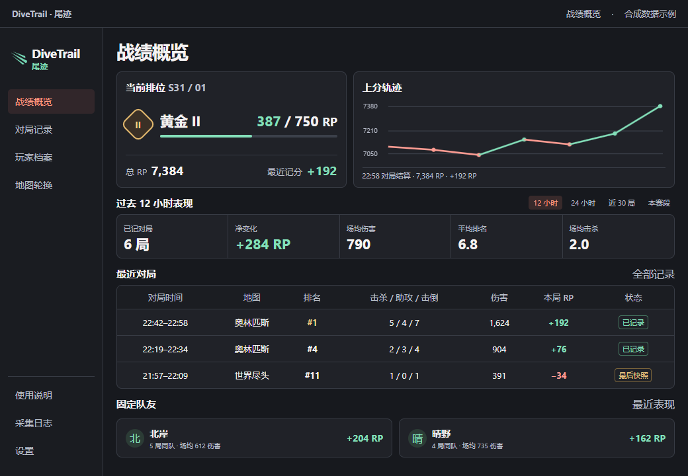
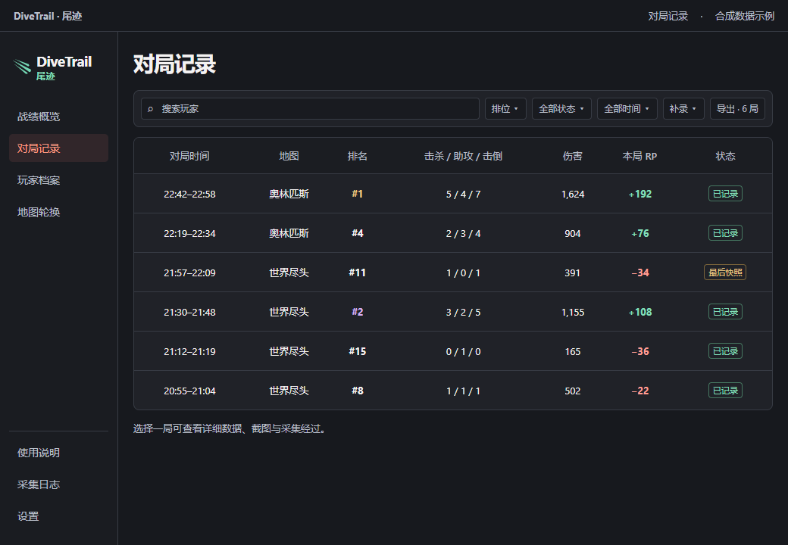
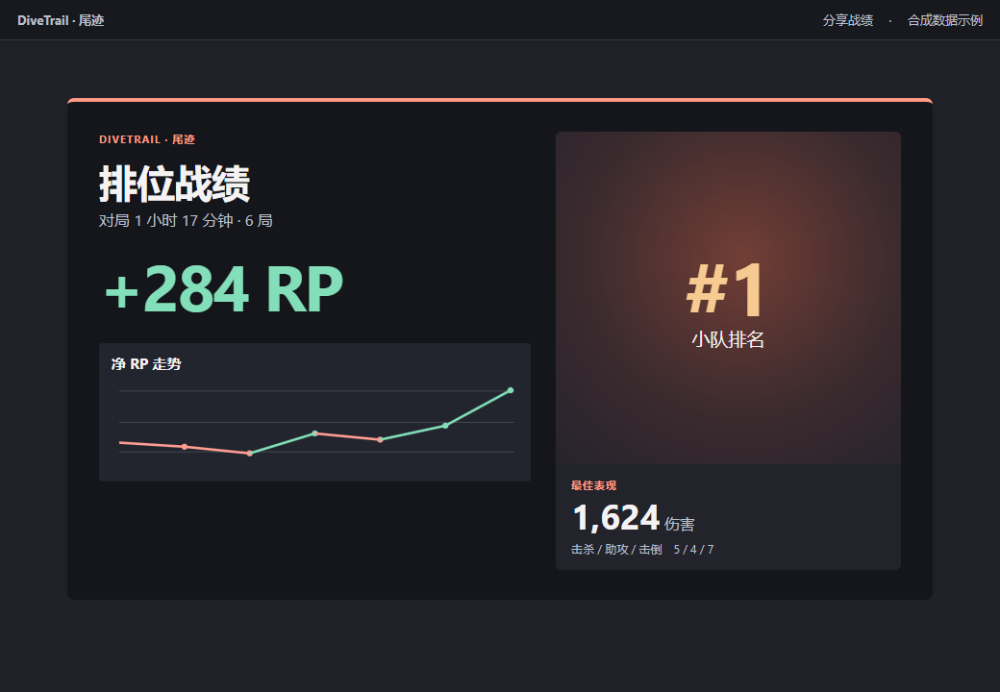

知道分在哪几局涨跌
上分轨迹串起每局 RP。切换过去 12 小时、24 小时、近 30 局或本赛段，查看净分变化。
Apex Legends match history and squad stats
自动记下对局战绩和 RP，复盘一晚的上分轨迹。固定三排的表现，也能放在一起看。
v1.0.0 更新说明 ↗Windows 10 / 11 · x64

从单局分数到固定队的表现，记录都在自己的电脑上。
上分轨迹串起每局 RP。切换过去 12 小时、24 小时、近 30 局或本赛段，查看净分变化。
按时间、玩家或模式筛选。打开一局即可核对排名、阵容、击杀 / 助攻 / 击倒、伤害和截图。
看看两位固定队友最近的场均伤害、击杀和助攻。导出分享卡，发给队友留个纪念。


填一次游戏昵称即可开始，无需注册 DiveTrail 账号。
安装版从开始菜单打开。便携版完整解压到可写目录，再启动目录里的程序。
按使用说明切到 Apex 排位大厅，让尾迹识别游戏昵称，也可以直接填写。
在三人总结和经验值分数页分别稍作停留。想手动补拍时，在对应画面按 F8。
排位大厅、开局与局内 HUD、三人总结、经验值分数页，以及个人数据页。总结已读取或 RP 已核验时，可在设置开启提示音。公开版使用文字识别，局内战斗计数和英雄头像可能留空。